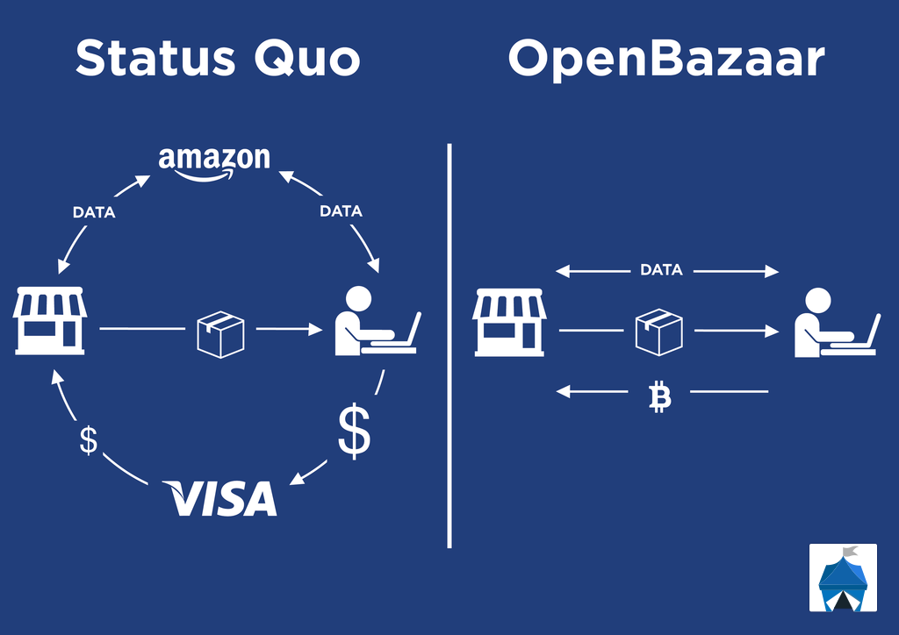

You’re looking to sell on OpenBazaar; welcome! This guide will help you understand what it’s like to sell goods and services in the world’s most private, secure, and liberating marketplace online.
OpenBazaar is a fundamentally different way to do trade. It’s a completely decentralized marketplace, which gives vendors many advantages over other platforms: no marketplace fees, no data collection, and no censorship. A decentralized marketplace means you are running your own store on your own computer. You aren’t trusting anyone else to control your money or trade. This is also referred to as a peer-to-peer (or P2P) network.
Decentralization has many advantages, but there are trade-offs as well, and this guide is meant to equip vendors with realistic expectations about how OpenBazaar works and what they should expect. Being decentralized also means it doesn’t work the same way as other platforms. If you come from another e-commerce platform and expect the same experience, you’ll end up confused and possibly disappointed.
Some parts of this guide will discuss the technical details to help explain why things work the way they do. If learning the details doesn’t interest you, feel free to skip those sections, which are labelled “More information.” Throughout this article I’ll be referring to stores, pages, and nodes. These are all the same thing: the OpenBazaar program running on your computer.
What does decentralized mean?

The primary way OpenBazaar is different from other marketplaces is the fact that’s it’s completely decentralized. What does that mean?
Most marketplaces are centralized, meaning there is a company which own the platform and everyone using it connects to a group of computers that the company controls. Because they have total control over the platform, these middlemen can charge their 10% or 20% cut from transactions, they can monitor your data (possibly selling it or having it stolen), and they can censor transactions.
OpenBazaar has no middlemen. You download the program onto your computer and it connects you directly to other people running the program. This means there are no middlemen involved in your trade at all. That’s how OpenBazaar avoids fees and censorship: there’s no one in the middle of the trade to charge fees or stop the trade. Buyers and sellers are communicating directly to each other.
This is a powerful new way to do commerce, but there are trade-offs being made. Giving someone else control of your money and your store is sometimes more convenient, because you aren’t taking on the responsibility of managing the store yourself.
For example, all of your OpenBazaar store data is kept on your own computer. If you were to create an OpenBazaar store – with included cryptocurrency wallet – and you didn’t back up your data, your store could be lost if your hard drive failed. When you take on the responsibility of controlling your own trade entirely, there are extra steps you need to take.
OpenBazaar is not a website. There is no one who controls OpenBazaar. You don’t log into an account managed by someone else. When you download and run the software, you are OpenBazaar.
OpenBazaar is a community of people running this software in order to buy and sell goods and services with each other. Most people in the community (including the developers) are friendly and will help you if you need help – so you aren’t entirely on your own – but ultimately you’re responsible for taking control of your own trade.
Now that we’ve established the biggest difference between OpenBazaar and other platforms, let’s look at how this difference manifests itself for the average vendor.
1) You need to backup your store data and wallet
Your store exists nowhere but on your own computer. If your hard drive fails, or your computer is inaccessible for any reason, then you’ve lost your store and any coins in your wallet.
That is, unless you’ve backed up your data! You need to backup this data as soon as you create your store. This data needs to be backed up somewhere other than the drive the store is located on, otherwise the backup does you no good. Please note that this backup should be in a place that isn’t accessible to anyone else; with this backup someone else could take control of your store.
There are two steps to backing up your store. First, in the OpenBazaar client go into Menu > Settings > Advanced, then click “Show Seed” (backing up the seed will also be prompted when your OpenBazaar wallet first receives funds.) Write down those words, in order, on a piece of paper, and keep it somewhere safe. This will allow you to recreate your OpenBazaar node ID and your wallet in case something goes wrong.
However, that seed will not recreate your listings and any open orders you had, so there’s a second step to backing up your store. You need to make a copy of your data folder, locations are below:
Windows: C:\Users\[Username]\OpenBazaar2.0
OSX: ~/Library/Application Support/OpenBazaar2.0
Linux: ~/.openbazaar2.0
Place a copy of this data in a secure place, possibly a external drive or USB drive. If you’re familiar with using encryption, you can encrypt this backup for added safety.
It’s a good idea to periodically backup your data folder so that new listings or orders are backed up.
2) Communication between users isn’t always happening in real time
We assume that when we see a message or notification that something new just happened to trigger it, but that’s not always true on OpenBazaar. Because it’s a P2P network users are trying to communicate directly with each other’s computers, but many users’ computers and networks aren’t configured to allow this properly. As a result, messages can be delayed, sometimes significantly.
What this looks like in OpenBazaar is an order being placed by a customer, but a vendor not seeing the order for another hour or so. Or the same delay happening with chat messages. This confuses both parties who expect the messages to arrive immediately. It’s important to note that the messages aren’t lost; they are being hosted on the network (in something called a distributed hash table or DHT) but the receiving node won’t know about them for a little while.
More Information
This is happening because many users’ networks are setup to only make outgoing connections, so they are able to connect out to someone but they aren’t able to accept incoming connections. This means that other computers can’t send your computer a message directly. OpenBazaar still works without accepting incoming connections, but the messages won’t be received in real time unless you accept incoming connections.
If you can’t accept incoming connections, then other OpenBazaar nodes think you’re offline, and they send their message into the distributed hash table (DHT). Your node will periodically check the DHT and see the new messages, which is why there is a delay. This is also why restarting OpenBazaar will often retrieve those messages; one of the first things OpenBazaar does when it opens up it check the DHT for new messages.
Fixing delays in messaging
There are a few ways to improve messaging. The best way is to do something called port forwarding. Setting up port forwarding allows you to receive messages from the OpenBazaar network in real time. There’s only one port you need to forward:
Port 4001, TCP
This is done by going into your router settings. Google “How to port forward” if you need help. You may also need to add an exception to your firewall to accomplish the same goal. You can check if you’ve successfully opened the port by using this tool and entering port 4001 in the “Port to check” field.
If you’re unable to port forward, don’t worry – OpenBazaar will still work for you. But you will need to be aware that orders and chat messages will be delayed. If you get a message from a buyer about an order that you don’t see yet, be patient and wait to see if the order comes in. If you don’t see anything after an hour, try restarting your OpenBazaar client.
If a buyer says they sent a message or a made an order that never shows up on your end, make sure that both you and the buyer have up to date versions of OpenBazaar, you’ve both restarted OpenBazaar and you’ve waited at least one hour. Many times the problem is the buyer’s message wasn’t sent properly the first time and a restart should send a new message.
3) Your store is always online, sort of
Since you run your store on your own computer, what happens when you shutdown your computer? You might expect that your store would be unreachable to other people, and you’d be right – at least you would have been for previous versions of OpenBazaar. Now OpenBazaar stores can be accessible – and even take orders – when they’re offline. How’s that even possible in a P2P network?
In the 2.0 we have built on top of a new technology called IPFS. This technology allows offline stores and listings to be reseeded (shared) by other online OpenBazaar users. When you view another store or listing, you are automatically reseeding that store to the rest of the network if they go offline. There are also some “push nodes” that allow people to automatically push their new listings onto them and they’ll be reseeded (regular users are not push nodes).
This results in a network where most content doesn’t goes completely offline unless the vendor leaves the network for more than one week. Right now, most content will get reseeded for a week before it gets dropped entirely. This means that vendors must open up the OpenBazaar app at least once a week in order for their listings to be available to the rest of the network.
However, there are plenty of reasons to try to keep your store running as much as possible. Obviously, being able to respond quickly to your customers is important in any business, and if you’re not running OpenBazaar then you won’t know when new orders come in (unless you set up email integration). Also, orders placed when offline can cost more than online orders, since they use a 1-of-2 multisig (more on that later) so you’re paying for one extra coin transaction fee.
More information
Because of the need to design for stores that are able to be both online and offline, there are a few quirks that a user might not expect. One such quirk is how reviews work. If anything on a vendor’s node changes, then everyone who was reseeding that node now has an outdated copy and needs to get a new copy. On the IPFS network, this is all determined by hashes. Changing anything changes the hash, which makes existing nodes caches outdated. For large changes such a new listings or other changes completed by the vendor, this isn’t a problem, as the vendor would want the new hash to be the valid one, replacing the old. But when there are minor changes, or changes that are forced from the outside (such as someone leaving a review) then forcing the hash to change each time would be a problem. Because of this we batch small changes (such as reviews) and only change the store hash once the vendor publishes something themselves. This keeps store hashes and reseeded content accurate for longer at the cost of the not displaying the newest information. A vendor will need to make a change in their store and save it for new reviews to display.
4) OpenBazaar is still a niche community
The primary advantage of existing ecommerce platforms is their size. They have millions of users, so your products are more likely to be seen on those platforms than on OpenBazaar.
Because of this reality we don’t recommend that people transition completely from the old platforms onto OpenBazaar (unless they are selling something cryptocurrency-related), but instead place their listings on both platforms. If you sell your OB listings at a discount and then message your customers on the old platforms, you might be able to grow a new customer base on OpenBazaar and eventually make the transition complete.
Vendors need to take marketing and advertising into their own hands and work to spread the word about their store outside of the OpenBazaar platform. OpenBazaar is a cryptocurrency-based marketplace, and the reality is that the world is only beginning to adopt this new form of money. You should not expect to list an item on OpenBazaar and receive substantial sales without making your store or listings known to buyers. The most successful OpenBazaar vendors bring existing customers into the network.
5) Cryptocurrency is awesome and sometimes confusing
Eventually OpenBazaar will allow any cryptocurrency for purchases, but currently all orders on OpenBazaar are settled in Bitcoin, Bitcoin Cash or Zcash as chosen by the vendor. OpenBazaar has a cryptocurrenc wallet already built-in, which makes it easy to fund for buying things. Using this wallet is straightforward, but there are a few aspects of managing your funds and orders that could confuse you.
First, your incoming orders. When someone clicks “Pay” after they’ve clicked “Buy Now” then they have placed an order, which will show up in your Sales tab even if they never continue and pay for the order.
There are two possible reasons you are seeing an order that is unfunded. The first is that the buyer simply never paid and it’s an abandoned order. The second is that the buyer did pay, but your store isn’t seeing the payment on the coin network yet.
You will often need to wait for one confirmation on the payment before it displays as funded, so don’t expect orders to show as funded until they’ve confirmed. If the buyer paid a low fee and / or there is congestion on the network, the process of confirmation could take up to several hours.
It’s also possible that your store missed the payment altogether. In this case, it will need to reload transactions. Your store will automatically try to reload transactions periodically if it sees an unfunded order. If you have a buyer telling you they’ve paid an order and you don’t see the payment, you can go into Menu > Settings > Advanced > then click “Reload Transactions” and wait 10-15 minutes for the wallet to find the missing transaction. Don’t close the app while this process is happening.
Bitcoin Fees, Bitcoin Cash Fees, Zcash Fees
One part of cryptocurrency that can be confusing is the transaction fees. In order to send a payment through the Bitcoin, Bitcoin Cash or Zcash network, you need to include a fee. Fees go to miners who are securing the network and making sure transactions aren’t fraudulent. These fees vary based on how many other people are trying to send coins at the moment. Fees are often less than $1, but on some networks can also be over $1 or even $3 to $5 at times.
More information
Your fee also depends on how many inputs are needed to make the transaction. If you only have one input then the fee will be lower, but if you create a transaction with multiple inputs then the fee will be higher, sometimes much higher. By default you won’t use multiple inputs, but if you’ve made a lot of transactions your wallet with have several small change outputs, and of those are combined to make a new input then the fees will be higher.
You can partially control how much you want to pay in fees by determining how fast you want the payment to be confirmed by the network. If you want it confirmed as soon as possible (usually less than ten minutes) then you will choose a Priority fee. If you don’t mind waiting a half hour or so, then you can choose a Normal fee. If you don’t mind confirmation taking a few hours, you can choose the Economic fee. You can change your fee settings by going into Menu > Settings > Advanced, choosing your fee and pressing Save.
If your buyers have chosen a low fee then their payments may not confirm for hours and those funds will not be spendable from your OpenBazaar wallet until they’ve received one confirmation.
There are three types of payments in OpenBazaar, and it’s important to understand how fees impact these payments:
- Direct payments
- Moderated payments
- Offline payments
Direct payments
Direct payments are a buyer sending coins to the vendor and both parties are online. There is only one fee paid and the buyer pays it on top of the price of the item.
Moderated payments
Moderated payments occur when the buyer selects a moderator and payment goes into escrow. There are two fees paid, one is paid by the buyer when they fund the escrow and the other is taken out of the total amount in escrow when funds are released. Assuming there isn’t a dispute and funds are released to the vendor, then effectively the vendor has paid the second fee, since they receive the total in the escrow minus the cost of the fee.
Here’s an example: let’s say you’re selling a painting for $100. Someone purchases your painting; they choose a moderated payment and pay $100 plus a $1.50 fee that goes to the coin miners. The $100 are now securely in the escrow. You ship your painting and the buyer receives it, is happy with their order and they release the funds. Since you shipped the painting the coin fees have increased slightly, so when funds were released to you a $1.75 fee was taken out of the total $100 and you receive $98.25 in your wallet.
Two out of three parties are always needed to release funds from a moderated order, so if one of the parties goes unresponsive and doesn’t release funds then the other party will be forced to open a dispute with the moderator. A moderator will charge a fee (which comes out of the total escrowed funds) to close a dispute, so it’s in both parties interest to be responsive and not abandon orders.
Offline payments
There is a third type of payment: Offline payments. These happen when the vendor is offline. If the buyer makes a moderated payment to an offline vendor then it acts the same as a regular moderated payment. If the buyer makes a direct payment to an offline vendor, then the funds are put into a temporary escrow account that either buyer or vendor can pull from. If the vendor comes back online they can either accept or reject the offline order. If they accept and fulfill the order, then they receive the payment and receive the funds minus a fee. If the vendor never comes back online (or they reject the offline order when they come back online), then the buyer pulls the funds back, and they receive the funds minus a fee. Doing an offline payment means one party will be paying an extra fee, so it’s better for the vendor to be online for orders if possible.
OpenBazaar is a new and growing network populated by lots of great people who are looking to have more control over how they buy and sell online. This space is going to grow the most at first because of the relationships we have and how we use the network and tell others about it. If there’s something that you think would be helpful to this end that we can provide, please let us know!
Questions or concerns?
If you have problems along the way please visit our Support page for different ways to get the help you need and join the OpenBazaar community.
Ready to get started?
Download OpenBazaar now!
Do you want to help build this with us?
Download OpenBazaar right now to start buying or selling in minutes or just see what's for sale at OpenBazaar.com.
Developers, join us on Github to contribute to this open-source project!